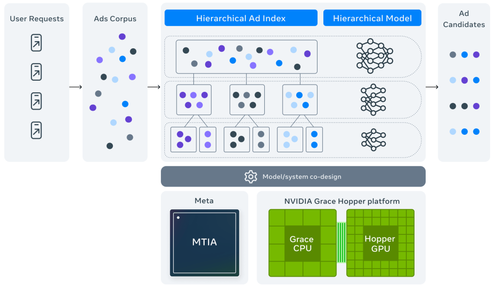
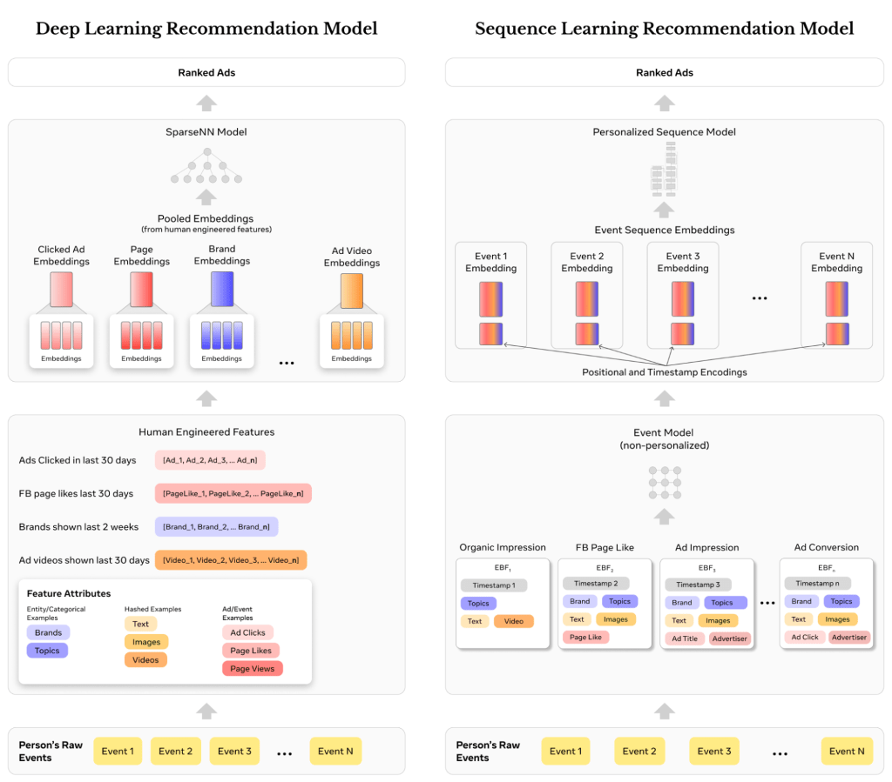
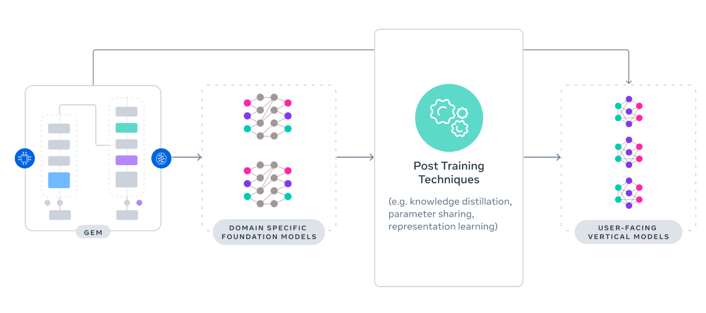
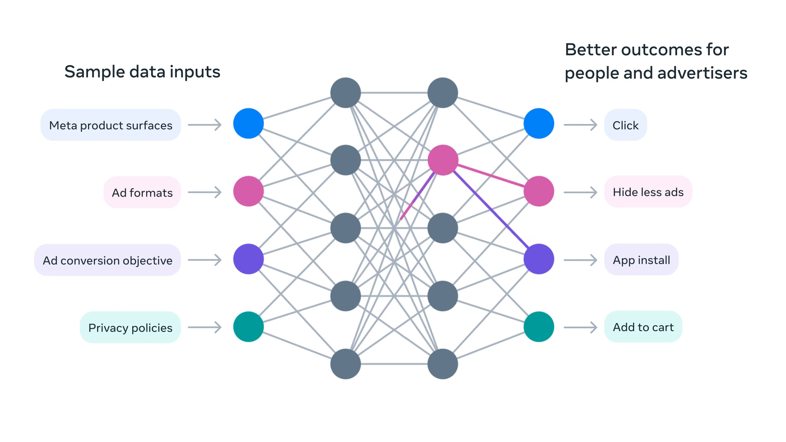
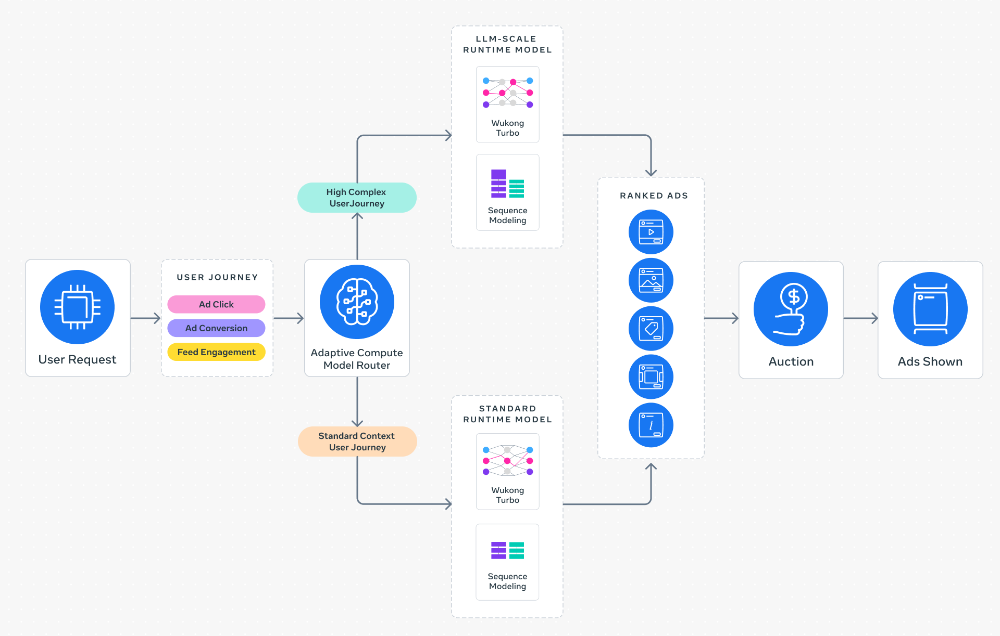

Este mes, Meta hizo cuatro cambios que afectan directamente tus campañas. El 1 de julio empezaron a cobrarte fees por ubicación geográfica en seis mercados. El 7 de julio anunciaron Muse Image — su primer modelo de inteligencia artificial de imágenes — que va a entrar en Advantage+ Creative en las próximas semanas. En junio eliminaron el control que les permitía a los usuarios desconectar su actividad fuera de Meta, lo que significa que los datos de tu Pixel ahora personalizan no solo los anuncios sino también el Feed y las respuestas de Meta AI. Y silenciosamente extendieron las ventanas de Custom Audiences de 180 a 365 días.
Cuatro cambios en menos de cuatro semanas. Sin aviso previo. Sin que nadie te explicara qué hacer.
Si llevas tiempo en Meta Ads, ya reconoces ese patrón. La plataforma cambia. Tus números se mueven sin que sepas por qué. Ajustas lo que puedes y esperas que funcione. Pero hay una razón de fondo que explica por qué todo esto pasa. Y casi nadie la conoce.
En diciembre de 2024, el equipo de ingeniería de Meta publicó en su blog oficial el anuncio de Andromeda. No fue una nota de prensa para anunciantes. Fue un paper técnico para ingenieros. La mayoría de los anunciantes nunca lo leyó. El despliegue global se completó en octubre de 2025. Y desde ese momento, todo el manual que aprendiste sobre Meta Ads comenzó a trabajar en tu contra.
El sistema que conocías ya no existe
Durante diez años, Meta Ads funcionó con una lógica clara: tú defines la audiencia, Meta te muestra a esas personas, y el mejor anuncio entre los que compiten gana la subasta.
Segmentabas por intereses. Creabas lookalike audiences desde tus mejores clientes. Dividías en múltiples ad sets para probar audiencias distintas. Escalabas el anuncio ganador.
Eso era el manual. Y durante una década funcionó.
Andromeda rompe ese manual desde la base. El sistema anterior usaba reglas predefinidas y parámetros de audiencia para filtrar anuncios. El nuevo usa redes neuronales profundas que leen el contenido real de tu anuncio: el visual, el mensaje, los colores, la emoción. Y lo compara con el estado de cada usuario en tiempo real.
¿Qué significa eso en términos simples?
Antes, tu targeting determinaba quién veía tu anuncio. Ahora, tu creativo determina quién ve tu anuncio. No es lo mismo. Cambia todo.
Dejaste de comprar acceso a audiencias.
Ahora compras distribución algorítmica basada en lo que tu creativo le dice a la máquina.
Tres sistemas. Una decisión que no es tuya.
Andromeda no trabaja solo. Meta desplegó tres sistemas de IA que operan en secuencia cada vez que alguien abre Facebook o Instagram.
Andromeda es la primera puerta. De los decenas de millones de anuncios activos en la plataforma, selecciona los miles de candidatos que siquiera tienen derecho a competir. Según el Meta Engineering Blog, esto implica procesar tres órdenes de magnitud más anuncios que cualquier etapa posterior. Si Andromeda no te selecciona, el resto del proceso no existe para ti. Tu presupuesto, tu targeting, tu bid: nada de eso importa si no pasas esta puerta.
Andromeda: Sistema de recuperación jerárquico de anuncios

Sequence Learning: cómo Meta lee el historial completo del usuario

GEM — Generative Ads Model es el cerebro creativo del sistema. Identificado como el núcleo central del motor de recomendación de Meta, GEM analiza patrones en comportamientos orgánicos y secuencias de anuncios para sugerir qué tipo de creativo, titular y formato tiene mayor probabilidad de funcionar para cada placement y cada usuario. También puede modificar elementos de tu anuncio — recortar la imagen, ajustar el brillo, generar variaciones de texto — sin pedirte permiso. Lo que el usuario ve puede no ser exactamente lo que tú subiste.
GEM: Del modelo fundacional a los modelos por vertical

Meta Lattice toma la decisión final. Reemplazó a los cientos de modelos de ranking separados que Meta tenía para Feed, Reels, Stories e Instagram. Ahora un solo sistema aprende de todos simultáneamente. Si un patrón creativo funciona para conversiones en Instagram Stories, Lattice aplica ese aprendizaje automáticamente a campañas de Facebook Feed. Según Meta for Business, Lattice mejoró la calidad de los anuncios en un 12% y las conversiones en un 6% desde su despliegue.
Lattice: Una red neuronal que aprende de todos los objetivos a la vez

Lattice por dentro: el modelo de ranking adaptativo por etapas

Por qué tu estrategia anterior ahora te está costando dinero
Confect analizó 3.014 anunciantes, $834 millones en gasto publicitario real y más de un millón de anuncios durante todo el periodo de despliegue de Andromeda en 2025. Los resultados son incómodos.
El ROAS promedio cayó un 7% durante el rollout. Los anunciantes que más años llevaban en la plataforma fueron los más afectados, porque tenían más hábitos del sistema anterior arraigados.
Esto es lo que el viejo playbook hace bajo el sistema nuevo:
Targeting estrecho. Antes te ayudaba a llegar a las personas correctas. Ahora le dice a Andromeda que ignore toda la audiencia que no coincide con tus parámetros, aunque el sistema sepa que ahí hay compradores potenciales. Los datos son contundentes: el targeting amplio genera un 49% más de ROAS que las lookalike audiences bajo Andromeda.
Pocas variaciones del mismo creativo. Antes escalabas el ganador. Ahora, Andromeda agrupa las variaciones similares en una sola entidad. Si tienes diez versiones del mismo producto con pequeños cambios de color o texto, el sistema las trata como si fuera un solo anuncio. No diez oportunidades. Una.
Escalar el creativo ganador semanas y semanas. Antes un anuncio podía correr meses. Ahora la vida útil de un creativo se comprimió de 6-8 semanas a 2-4 semanas. Andromeda encuentra a las personas perfectas para tu anuncio muy rápido. Y las agota igual de rápido.
¿Cuándo fue la última vez que renovaste completamente tus creativos?
El problema no es tu presupuesto ni tu targeting.
Es que estás optimizando para un sistema que ya no existe.
Lo que hacen diferente los anunciantes que están ganando
El mismo estudio de Confect identificó patrones claros entre los anunciantes que mejoraron resultados durante el periodo de Andromeda. No son trucos. Son ajustes estructurales que le dan al sistema lo que necesita para trabajar bien.
Más creativos genuinamente distintos, no más variaciones. Los anunciantes con mejor performance corrieron un 33% más anuncios que el promedio. Pero la clave no es cantidad — es diversidad real. Un test controlado con 25 creativos verdaderamente distintos en un solo ad set produjo un 17% más de conversiones a un 16% menos de costo comparado con una estructura tradicional de múltiples ad sets segmentados. Andromeda necesita señales variadas para encontrar todos los segmentos posibles de tu audiencia.
Targeting amplio desde el inicio. Dejar que Andromeda haga el trabajo de encontrar la audiencia en lugar de definirla tú. Esto va en contra de una década de mejores prácticas en Meta Ads. Pero los datos dicen que funciona un 49% mejor bajo el sistema actual.
Activar Advantage+ Creative. Según el blog oficial de Meta Engineering, cuando anunciantes que no usaban Advantage+ Creative activaron sus funciones de IA, experimentaron un 22% de aumento en ROAS. Los que usaron generación de imagen vieron un 7% adicional en conversiones. GEM funciona mejor cuando le das permiso de trabajar.
Conversions API, no solo Pixel. Andromeda usa la calidad de las señales de conversión como factor para decidir si tu anuncio entra al pool de candidatos. El Pixel solo ya no es suficiente. Implementar la Conversions API con deduplicación correcta mejora directamente la frecuencia con la que pasas el filtro de recuperación.
¿Estás dando al sistema las señales que necesita o sigues peleando contra él?
Metodologías
- Creative Sprint. En lugar de escalar un solo anuncio ganador, producir un bloque de 20-30 creativos genuinamente distintos cada 3-4 semanas. Formatos diferentes, ángulos emocionales distintos, hooks variados. No variaciones del mismo: anuncios que Andromeda lea como entidades separadas.
- Broad First Testing. Lanzar campañas con targeting mínimo (edad + país, sin intereses) y dejar que el sistema identifique la audiencia a partir de las señales del creativo. Validar con datos reales antes de añadir restricciones de segmentación.
Herramientas digitales
Lo que me parece más revelador de todo esto no es que Meta haya cambiado el sistema. Es que lo cambió sin avisarle al 99% de los anunciantes, y luego dejó que cada uno sacara sus propias conclusiones sobre por qué sus números empeoraban.
Los que entendieron qué había cambiado adaptaron su estrategia. Los que no, siguen optimizando variables que el nuevo sistema ignora: ajustando el targeting, subiendo y bajando el presupuesto, probando nuevos conjuntos de audiencia, sin tocar lo único que ahora importa de verdad.
Y lo mismo aplica a WhatsApp. Desde octubre de 2026, Meta cobra por mensajes de servicio que antes eran gratuitos. Desde agosto, los agentes de IA en su plataforma de negocios facturan a $2 por millón de tokens. El canal es de Meta. Las reglas son de Meta. Cuando deciden cambiarlas, lo hacen. Ese es el patrón.
La única posición sostenible no es dominar el algoritmo. Es entender cómo funciona y darle exactamente lo que necesita para trabajar a tu favor.
Pablo Santa Gadea